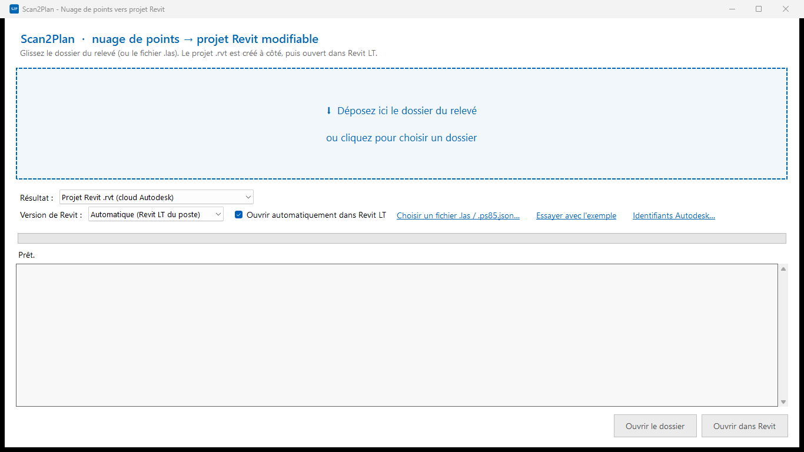
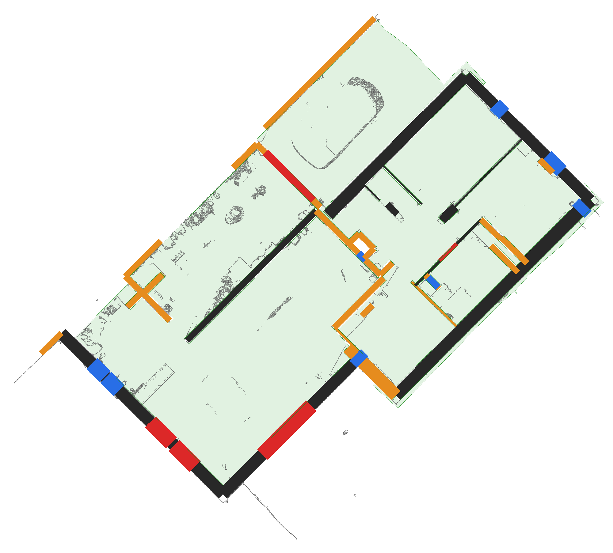
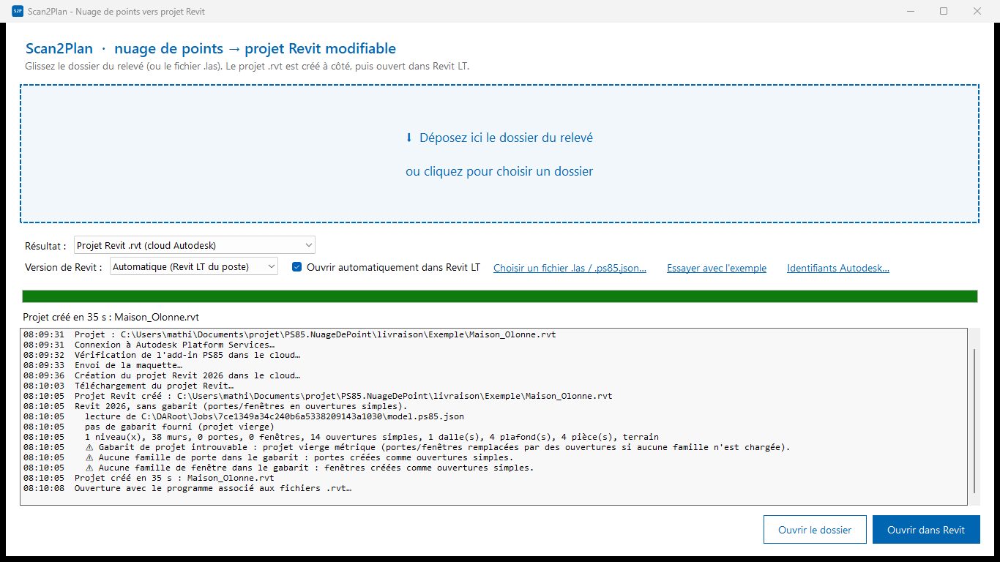

Du nuage de points au projet Revit modifiable, en une minute
Glissez le dossier du relevé 3D : Scan2Plan détecte niveaux, murs, portes, fenêtres et pièces, puis ouvre un vrai projet Revit dans Revit LT.
Windows 10 et 11 · Revit LT 2026 / 2027 · Mode hors ligne IFC + DXF inclus

Comment ça marche
Glissez le relevé
Le dossier livré par le géomètre ou le fichier .las, directement dans la fenêtre.
Analyse automatique
Niveaux, murs avec leur épaisseur, portes, fenêtres, pièces, dalle, plafonds et terrain : environ 5 secondes pour 20 millions de points.
Projet Revit natif
Le projet .rvt est créé à côté du relevé et s'ouvre dans Revit LT. Tous les éléments sont de vrais objets Revit, modifiables.

Ce que contient le projet
| Murs | Un type par épaisseur relevée, sur leur axe ; épaisseur mesurée ou signalée comme estimée. |
|---|---|
| Ouvertures | Portes et fenêtres du gabarit de votre Revit LT, aux dimensions relevées. |
| Pièces | Pièces, dalle et plafonds à la hauteur mesurée. |
| Terrain | Toposolide issu du relevé. |
| Coordonnées | Lambert-93 conservé (coordonnées partagées). |
Deux modes
Projet Revit (.rvt)
Le projet est fabriqué par le service cloud Autodesk Platform Services avec votre propre compte Autodesk (offre gratuite disponible). Scan2Plan utilise automatiquement la version et le gabarit de votre Revit LT.
Hors ligne, sans compte
Maquette IFC 4 géoréférencée et plans DXF par niveau (murs, ouvertures, pièces, coupe du nuage à 1 m), importables dans Revit LT et tous les logiciels de CAO.

Support
Une question, un problème ?
Ouvrez une demande sur la page Support (GitHub) en joignant le texte du journal affiché dans la fenêtre. Ne communiquez jamais votre Client Secret Autodesk.
Compte Autodesk
Le mode Projet Revit utilise une application créée sur aps.autodesk.com (API « Automation » et « Data Management »). Ses identifiants sont saisis dans Scan2Plan et chiffrés sur votre poste.
Essayer sans compte
Dans Scan2Plan, cliquez sur « Essayer avec l'exemple » : une maison de démonstration est convertie hors ligne en IFC et plans DXF.